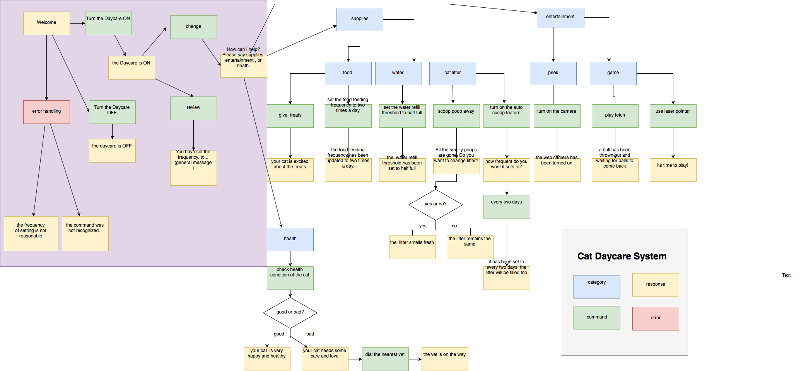

Mutian Yan Project 2 Submission
Mutian Yan Project 2 -- Speech Interface of a Cat DayCare System
-
Demo Video
Demonstrate the basic functionalities of the pet care agent including the functionality of making a reminder to Google Calendar at the end of the video; From user testing, it is really clear to see listing all the options would be very helpful to users especially the first-time users, so I included the options for users to know "what's available" at the end of several responses of intents in the revision.
Demo Video Google Drive
- Github Repo
Include the Zip package of Dialogflow agent
Including code configuration of Google Calendar in the fulfillment section
Github Repo
- DialogFlow Demo Link
DialogFlow Demo Link
-
The diagram from last assignment
